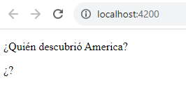
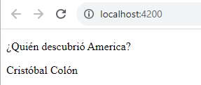
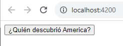
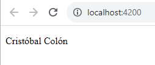
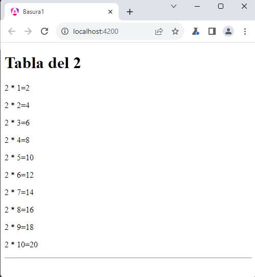

El bloque diferible podemos indicar bajo que circunstancias debe cargarse:
on idle: La opción de activación por defecto. Por lo mismo es que no se la agrega:
@defer (on idle){
<p>
@for(num of numeros;track num) {
{{num}} -
}
</p>
}
En este caso lo más común es no disponer dicha activación:
@defer {
<p>
@for(num of numeros;track num) {
{{num}} -
}
</p>
}
on timer: se activaría después de una duración específica. La duración es obligatoria y se puede especificar en 'ms' o 's':
<p>¿Quién descubrió America?</p>
@defer (on timer(5s)) {
<p>Cristóbal Colón</p>
} @placeholder {
<p>¿?</p>
}
Primero se muestra el contenido del bloque @placeholder y luego de 5 segundos es remplazado por el contenido del bloque @defer.
Y luego de 5 segundos:
on interaction: Se activará el bloque diferido cuando el usuario interactúe con el elemento especificado en el @placeholder a través de los eventos click o keydown.
@defer (on interaction) {
<p>Cristóbal Colón</p>
} @placeholder {
<button>¿Quién descubrió America?</button>
}
Primero se muestra el botón:
Y al ser presionado el botón aparece el párrafo remplazando el contenido del @placeholder:
on hover: se activa la carga diferida cuando el mouse se coloca sobre el área de activación. Los eventos utilizados para esto son mouseenter y focusin.
@defer (on hover) {
<p>Cristóbal Colón</p>
} @placeholder {
<p>¿Quién descubrió America?</p>
}
Si desplazamos la flecha del mouse sobre el párrafo '¿Quién descubrió America?', el mismo será actualizado por el párrafo 'Cristóbal Colón'.
on viewport: se activa el bloque diferido cuando el contenido se encuentra en la ventana visible del navegador. Es muy útil si tenemos páginas que requieren un scroll casi infinito. No tenemos que renderizar si no avanzamos con el scroll de la página. El siguiente ejemplo que vamos a realizar utilizará esta opción de activación de la vista diferida.
Crear una componente llamada 'tablamultiplicacion' que reciba en una propiedad el número del cual queremos que muestre la tabla de multiplicación y se encargue de mostrarla por pantalla.
<app-tablamultiplicacion [tabla]="2" />
El resultado de visual de esta componente debe generar la siguiente pantalla:
Por otro lado la componente principal de la aplicación generar las tablas de multiplicar del 2 al 10000. Mediante vistas diferidas evitar que se generen todas las tablas en forma inmediata y haga que la experiencia de usuario sea aceptable.
Creemos el proyecto:
ng new proyecto028
Primero creamos la componente:
ng generate component tablamultiplicacion
Codificamos la clase 'tablamultiplicacion.component.ts':
import { Component, Input } from '@angular/core';
@Component({
selector: 'app-tablamultiplicacion',
imports: [],
templateUrl: './tablamultiplicacion.component.html',
styleUrl: './tablamultiplicacion.component.css'
})
export class TablamultiplicacionComponent {
@Input() tabla:number=0;
}
Por otro lado la vista 'tablamultiplicacion.component.html':
<h1>Tabla del {{tabla}}</h1>
@for(valor of [1,2,3,4,5,6,7,8,9,10];track $index) {
<p>
{{tabla}} * {{valor}}={{tabla*valor}}
</p>
}
<hr>
Pasemos ahora a modificar la componente creada por defecto 'app.component.ts':
import { Component } from '@angular/core';
import { RouterOutlet } from '@angular/router';
import { TablamultiplicacionComponent } from './tablamultiplicacion/tablamultiplicacion.component';
@Component({
selector: 'app-root',
imports: [RouterOutlet, TablamultiplicacionComponent],
templateUrl: './app.component.html',
styleUrls: ['./app.component.css']
})
export class AppComponent {
numeros = [...Array(9999).keys()].map(num => num + 2);
}
Creamos un arreglo llamado numeros donde guardamos los valores del 2 al 10000:
Por último la plantillo donde hacemos uso de las vistas diferidas 'app.component.html':
@for(valor of numeros;track valor) {
@defer (on viewport) {
<app-tablamultiplicacion [tabla]="valor" />
}
@placeholder {
<p>Esperando la tabla del {{valor}}</p>
}
}
<router-outlet />
Dentro del ciclo @for creamos las 9999 vistas diferidas y su activación depende que se esté viendo en la pantalla del navegador, como podemos imaginar la mayoría de las tablas están fuera del viewport del navegador (según el tamaño de la pantalla pueden estar visibles 2 o tres tablas por pantalla)
La experiencia de ejecución es aceptable gracias a que utilizamos la activación por viewport.
Podemos probar esta aplicación en la web aquí.
Probemos de eliminar el 'on viewport' y veremos que el navegador se toma su tiempo en renderizar las 9999 tablas de multiplicar:
@for(valor of numeros;track valor) {
@defer {
<app-tablamultiplicacion [tabla]="valor" />
}
@placeholder {
<p>Esperando la tabla del {{valor}}</p>
}
}